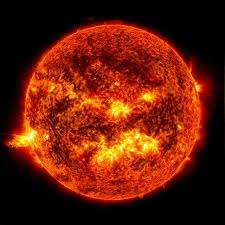
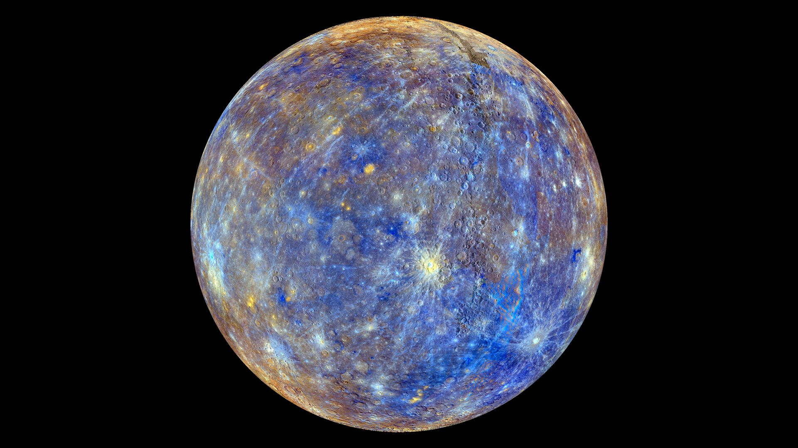
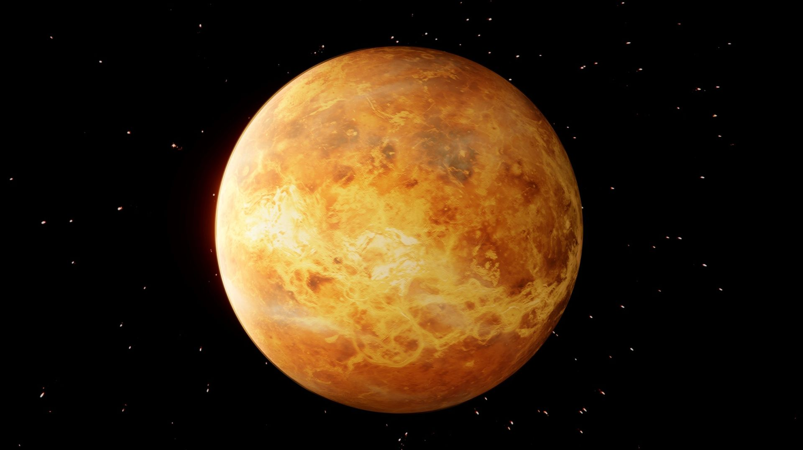
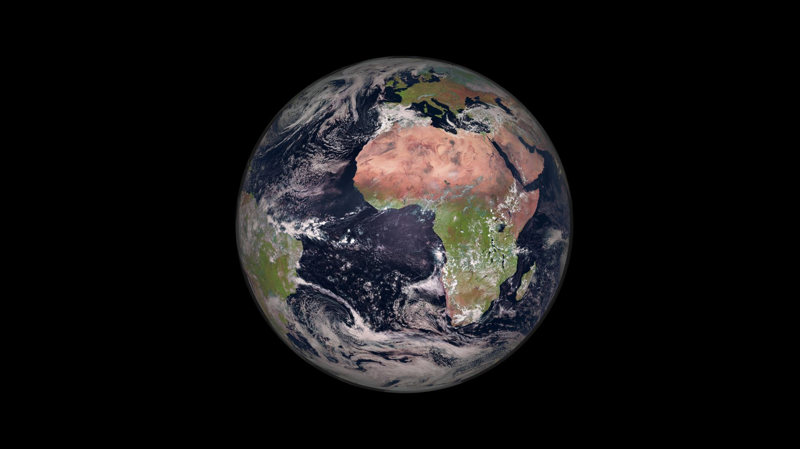
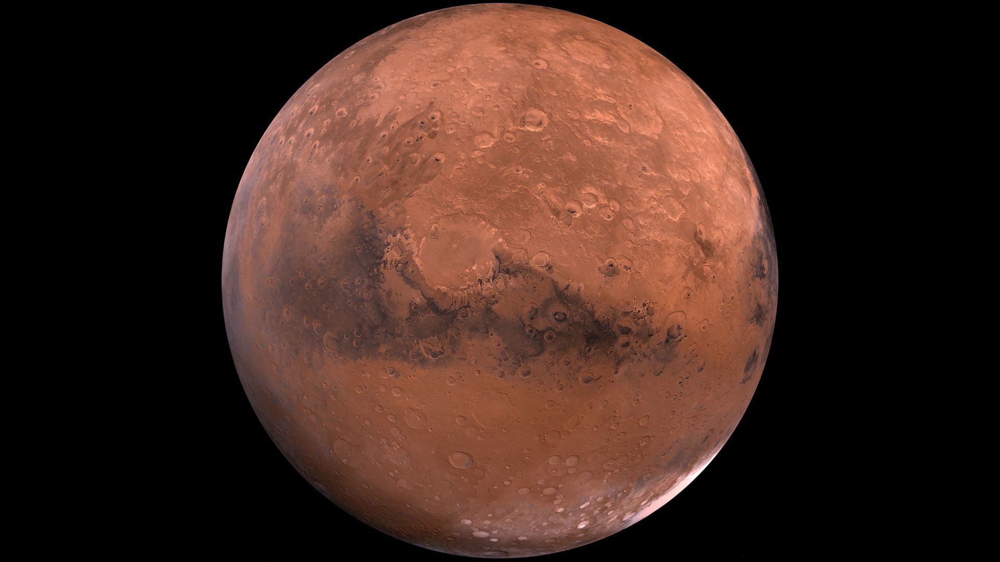
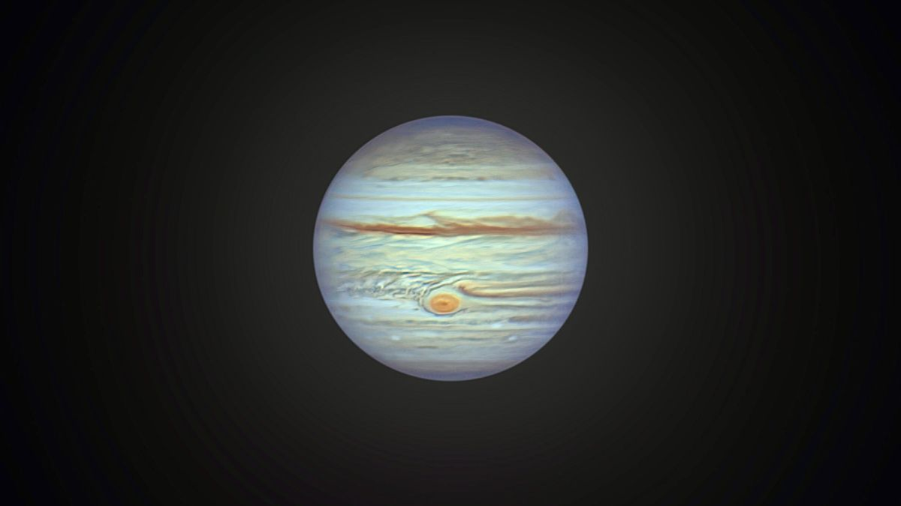
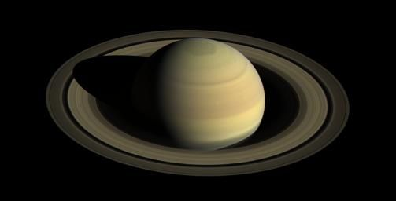
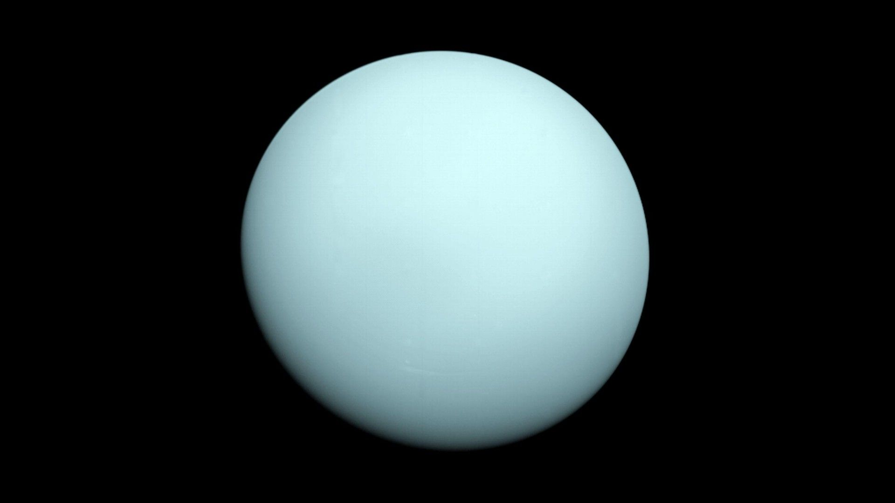
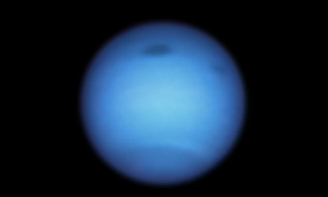

Solar System
The Solar System is the gravitationally bound system of the Sun and the objects that orbit it. It formed 4.6 billion years ago from the gravitational collapse of a giant interstellar molecular cloud. The vast majority (99.86%) of the system's mass is in the Sun, with most of the remaining mass contained in the planet Jupiter.
- The four inner system planets—Mercury, Venus, Earth and Mars—are terrestrial planets, being composed primarily of rock and metal.
- The four giant planets of the outer system are substantially larger and more massive than the terrestrials.
- The two largest, Jupiter and Saturn, are gas giants, being composed mainly of hydrogen and helium; the next two, Uranus and Neptune, are ice giants, being composed mostly of volatile substances with relatively high melting points compared with hydrogen and helium, such as water, ammonia, and methane.
All eight planets have nearly circular orbits that lie near the plane of Earth's orbit, called the ecliptic.
Sun
The Sun is the Solar System's star and by far its most massive component. Its large mass (332,900 Earth masses), which comprises 99.86% of all the mass in the Solar System, produces temperatures and densities in its core high enough to sustain nuclear fusion of hydrogen into helium. This releases an enormous amount of energy, mostly radiated into space as electromagnetic radiation peaking in visible light.
Because the Sun fuses hydrogen into helium at its core, it is a main-sequence star. More specifically, it is a G2-type main-sequence star, where the type designation refers to its effective temperature. Hotter main-sequence stars are more luminous. The Sun's temperature is intermediate between that of the hottest stars and that of the coolest stars. Stars brighter and hotter than the Sun are rare, whereas substantially dimmer and cooler stars, known as red dwarfs, make up about 75% of the stars in the Milky Way.
Inner planets
The four terrestrial or inner planets have dense, rocky compositions, few or no moons, and no ring systems. They are composed largely of refractory minerals such as the silicates—which form their crusts and mantles—and metals such as iron and nickel which form their cores. Three of the four inner planets (Venus, Earth and Mars) have atmospheres substantial enough to generate weather; all have impact craters and tectonic surface features, such as rift valleys and volcanoes. The term inner planet should not be confused with inferior planet, which designates those planets that are closer to the Sun than Earth is (i.e. Mercury and Venus).
Mercury
Mercury (0.4 AU (60 million km; 37 million mi) from the Sun) is the closest planet to the Sun. The smallest planet in the Solar System (0.055 MEarth), Mercury has no natural satellites. The dominant geological features are impact craters or basins with ejecta blankets, the remains of early volcanic activity including magma flows, and lobed ridges or rupes that were probably produced by a period of contraction early in the planet's history. Mercury's very tenuous atmosphere consists of solar-wind particles trapped by Mercury's magnetic field, as well as atoms blasted off its surface by the solar wind.[90][91] Its relatively large iron core and thin mantle have not yet been adequately explained. Hypotheses include that its outer layers were stripped off by a giant impact, or that it was prevented from fully accreting by the young Sun's energy.
Venus
Venus (0.7 AU (100 million km; 65 million mi) from the Sun) is close in size to Earth (0.815 MEarth) and, like Earth, has a thick silicate mantle around an iron core, a substantial atmosphere, and evidence of internal geological activity. It is much drier than Earth, and its atmosphere is ninety times as dense. Venus has no natural satellites. It is the hottest planet, with surface temperatures over 400 °C (752 °F), mainly due to the amount of greenhouse gases in the atmosphere. The planet has no magnetic field that would prevent depletion of its substantial atmosphere, which suggests that its atmosphere is being replenished by volcanic eruptions. A relatively young planetary surface displays extensive evidence of volcanic activity, but is devoid of plate tectonics. It may undergo resurfacing episodes on a time scale of 700 million years.
Earth
Earth (1 AU (150 million km; 93 million mi) from the Sun) is the largest and densest of the inner planets, the only one known to have current geological activity, and the only place where life is known to exist.[99] Its liquid hydrosphere is unique among the terrestrial planets, and it is the only planet where plate tectonics has been observed. Earth's atmosphere is radically different from those of the other planets, having been altered by the presence of life to contain 21% free oxygen. The planetary magnetosphere shields the surface from solar and cosmic radiation, limiting atmospheric stripping and maintaining habitability. It has one natural satellite, the Moon, the only large satellite of a terrestrial planet in the Solar System.
Mars
Mars (1.5 AU (220 million km; 140 million mi) from the Sun) is smaller than Earth and Venus (0.107 MEarth). It has an atmosphere of mostly carbon dioxide with a surface pressure of 6.1 millibars (0.088 psi; 0.18 inHg); roughly 0.6% of that of Earth but sufficient to support weather phenomena. Its surface, peppered with volcanoes, such as Olympus Mons, and rift valleys, such as Valles Marineris, shows geological activity that may have persisted until as recently as 2 million years ago. Its red colour comes from iron oxide (rust) in its soil. Mars has two tiny natural satellites (Deimos and Phobos) thought to be either captured asteroids, or ejected debris from a massive impact early in Mars's history.
Outer planets
The four outer planets, also called giant planets or Jovian planets, collectively make up 99% of the mass known to orbit the Sun. Jupiter and Saturn are together more than 400 times the mass of Earth and consist overwhelmingly of the gases hydrogen and helium, hence their designation as gas giants. Uranus and Neptune are far less massive—less than 20 Earth masses (MEarth) each—and are composed primarily of ices. For these reasons, some astronomers suggest they belong in their own category, ice giants. All four giant planets have rings, although only Saturn's ring system is easily observed from Earth. The term superior planet designates planets outside Earth's orbit and thus includes both the outer planets and Mars.
The ring–moon systems of Jupiter, Saturn, and Uranus are like miniature versions of the Solar System; that of Neptune is significantly different, having been disrupted by the capture of its largest moon Triton.
Jupiter
Jupiter (5.2 AU (780 million km; 480 million mi) from the Sun), at 318 MEarth, is 2.5 times the mass of all the other planets put together. It is composed largely of hydrogen and helium. Jupiter's strong internal heat creates semi-permanent features in its atmosphere, such as cloud bands and the Great Red Spot. The planet possesses a 4.2–14 Gauss strength magnetosphere that spans 22–29 million km, making it, in certain respects, the largest object in the Solar System.[129] Jupiter has 80 known satellites. The four largest, Ganymede, Callisto, Io, and Europa, are called the Galilean moons: they show similarities to the terrestrial planets, such as volcanism and internal heating. Ganymede, the largest satellite in the Solar System, is larger than Mercury; Callisto is almost as large.
Saturn
Saturn (9.5 AU (1.42 billion km; 880 million mi) from the Sun), distinguished by its extensive ring system, has several similarities to Jupiter, such as its atmospheric composition and magnetosphere. Although Saturn has 60% of Jupiter's volume, it is less than a third as massive, at 95 MEarth. Saturn is the only planet of the Solar System that is less dense than water. The rings of Saturn are made up of small ice and rock particles. Saturn has 83 confirmed satellites composed largely of ice. Two of these, Titan and Enceladus, show signs of geological activity; they, as well as five other Saturnian moons (Iapetus, Rhea, Dione, Tethys, and Mimas), are large enough to be round. Titan, the second-largest moon in the Solar System, is bigger than Mercury and the only satellite in the Solar System to have a substantial atmosphere.
Uranus
Uranus (19.2 AU (2.87 billion km; 1.78 billion mi) from the Sun), at 14 MEarth, has the lowest mass of the outer planets. Uniquely among the planets, it orbits the Sun on its side; its axial tilt is over ninety degrees to the ecliptic. This gives the planet extreme seasonal variation as each pole points toward and then away from the Sun. It has a much colder core than the other giant planets and radiates very little heat into space. As a consequence, it has the coldest planetary atmosphere in the Solar System. Uranus has 27 known satellites, the largest ones being Titania, Oberon, Umbriel, Ariel, and Miranda. Like the other giant planets, it possesses a ring system and magnetosphere.
Neptune
Neptune (30.1 AU (4.50 billion km; 2.80 billion mi) from the Sun), though slightly smaller than Uranus, is more massive (17 MEarth) and hence more dense. It radiates more internal heat than Uranus, but not as much as Jupiter or Saturn. Neptune has 14 known satellites. The largest, Triton, is geologically active, with geysers of liquid nitrogen. Triton is the only large satellite with a retrograde orbit, which indicates that it did not form with Neptune, but was probably captured from the Kuiper belt. Neptune is accompanied in its orbit by several minor planets, termed Neptune trojans, that either lead or trail the planet by about one-sixth of the way around the Sun, positions known as Lagrange points.